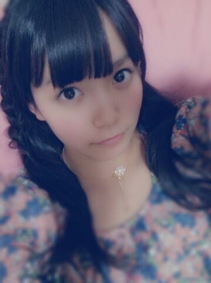
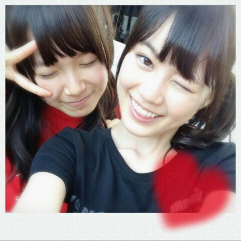
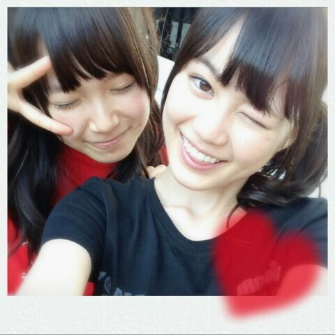

| 2013/09 19 Thu | ひめたん(*>ω<*)そ の342 |

前髪切ってもらった＼( ^O^ )／
視界が開けた開けた♪
ぴんくソファ気持ちよす
うとうとしてくるくらい気持ちよす
うとうと......ふあああ......
よ、よし姿勢を正したぞみなさん！
今日も日記書くぞふああ
なんか、なんてゆーか
もっとおしゃれさんになりたい！
いろいろ研究してみるね(｀・ω・´)がんばる
あのねー前の記事でね
お気に入りのりぼんちゃんが
捨てられてしまった話をしたじゃないですかー
それでね、ままがね今がんばって
まったくおんなじのさがしてくれてるの！
どこで買ったか覚えてないけど！
ままあぁ。ありがとうままぁ(´;ω;｀)
だからね元気になれそうだよー
励ましてくださってみなさんありがとー♪
それからおにゃのこのみなさん
アドバイスたくさんありがとーうっ
おとこのこくんもだけど
ひめきゅんさんはオシャレさんが多くて
うらやましい。尊敬する。
ひめたんもねーみなさんみたいに
センスのかたまりになりたい！頑張る！
チークはもーちょっと考える。大事だからねー
あっそれから
快眠のアドバイスもありがとー( ^ω^ )
もうそろそろがちで困っているので
いろいろ試してみようと思いますよー
睡眠は大事よってメイクさんにも言われたからねー
最近ね朝早く起きて
おうちのまわりをお散歩するんだけどね
もう肌寒いの。
秋が来たんだね(*´ω｀*)
ひめたんは暑すぎるの苦手だから
はよ秋になれーってずっと思ってたけど
なんだか寂しい気もするなあー
あっでも秋服かわいいよねー☆

いくちゃん (生田絵梨花ちゃん)ウインク
多分これ結構テンションノリノリな時に
撮った気がする( ^ω^ )笑
この写めシャッター押してんの
いくちゃんなんだけどね
もう連写しまくってるのよ彼女。
そしてふたりとも前髪荒ぶっておる
前髪切ってもらった＼( ^O^ )／
視界が開けた開けた♪
ぴんくソファ気持ちよす
うとうとしてくるくらい気持ちよす
うとうと......ふあああ......
よ、よし姿勢を正したぞみなさん！
今日も日記書くぞふああ
なんか、なんてゆーか
もっとおしゃれさんになりたい！
いろいろ研究してみるね(｀・ω・´)がんばる
あのねー前の記事でね
お気に入りのりぼんちゃんが
捨てられてしまった話をしたじゃないですかー
それでね、ままがね今がんばって
まったくおんなじのさがしてくれてるの！
どこで買ったか覚えてないけど！
ままあぁ。ありがとうままぁ(´;ω;｀)
だからね元気になれそうだよー
励ましてくださってみなさんありがとー♪
それからおにゃのこのみなさん
アドバイスたくさんありがとーうっ
おとこのこくんもだけど
ひめきゅんさんはオシャレさんが多くて
うらやましい。尊敬する。
ひめたんもねーみなさんみたいに
センスのかたまりになりたい！頑張る！
チークはもーちょっと考える。大事だからねー
あっそれから
快眠のアドバイスもありがとー( ^ω^ )
もうそろそろがちで困っているので
いろいろ試してみようと思いますよー
睡眠は大事よってメイクさんにも言われたからねー
最近ね朝早く起きて
おうちのまわりをお散歩するんだけどね
もう肌寒いの。
秋が来たんだね(*´ω｀*)
ひめたんは暑すぎるの苦手だから
はよ秋になれーってずっと思ってたけど
なんだか寂しい気もするなあー
あっでも秋服かわいいよねー☆

いくちゃん (生田絵梨花ちゃん)ウインク
多分これ結構テンションノリノリな時に
撮った気がする( ^ω^ )笑
この写めシャッター押してんの
いくちゃんなんだけどね
もう連写しまくってるのよ彼女。
そしてふたりとも前髪荒ぶっておる

 いつもブログの書き込みは大阪弁やけど
いつもブログの書き込みは大阪弁やけど
大丈夫ですか？
大丈夫！まったく問題ないです！
いつもありがとーう＼( ^O^ )／
今年の夏、1番美味しかった食べ物は？
あと、秋に何を食べたい？
なんだろうなー何食べたっけなー
あ！北海道のメロンかな♪
秋は和食が魅力的だよねー
でもウナギさんはちょっと苦手です...ごめんね...
オススメのポケモンいますか??
５匹くらしいか頭に浮かんでこぬ(´・ω・｀)
ピチューちゃん！
 今度北海道にきたら、
今度北海道にきたら、
どこにいきたいですか？？？
牧場に行ってソフトクリーム食べたーい！
あとロープウェイとかしたーい！
ねー誰か連れてってー！おねだりひめたん
妹は実はひめきゅんでもありますが、
あしゅりんたむを天使と崇めてもいます。
どっちと決めきれる様子でもないんで
二人ともに握手しにいっても大丈夫ですか？
ひめきゅんさーん☆
ひめたんは嬉しいし会いたいから
あしゅりんたむには内緒でおいで？
３人だけの秘密っ(*^ω^*)
 ひめたんは、どーーーーしても
ひめたんは、どーーーーしても
眠くなっちゃったらどうやって乗り切ってる??
諦める。
起きようってゆー努力をしながら寝てる
でもね、眠くなるのは仕方ないよ！そうでしょ？
......やーひめきゅんさんに怒られてまう(´・ω・｀)
ヘッドホンひめたんわ何色買ったのー？
何のヘッドホン使ってるのー？
白の、狙った訳じゃないけどSONYのだよー♪
見た目が少々いかついかもしれない。
重低音が素晴らしいヘッドホンらしいよー
色々な秋が有るけど、
ひめたんにとっては何の秋？
睡眠の秋。おやすみ！
......ごめんねーもちろん冗談だよー(⊃ω^⊂)
そうだなー自分磨きの秋かなー
ひめたんは寝てるとき、
ビームは出してないんですか？
め、閉じてる閉じてる閉じてるからああっ！
ひめたんは勉強する時音楽聴く？
音楽聴いてまわりの音をなくした方が
集中できる！なんて言ってた時期もあったけど
最近は即刻寝てまうので
お勉強中は音楽はガマンする←
飛鳥があしゅりんビームしてくれません
なので、握手会で積極的にやるよう
命令してください、お願いしますw←
やるだけやってみるけど
先にゆっとくけど、あたしが
あしゅりん (齋藤飛鳥ちゃん)に命令なんて。うぐ
 ひめたんっておめめパッチリなので、
ひめたんっておめめパッチリなので、
見るたびに吸い込まれそうになっちゃいます。
そんなにパッチリだと、たまに眼球落ちたりしない？
おーよくわかってんねー！
うんうん落ちる落ちる超落ちる
もうねーいっつもおめめ探してるよ＼( ^O^ )／
明日はマッサージの日だ！
美容院にもいきたい！

(＊´・ω・＊)
コメント(288)
2013/09/19 22:48